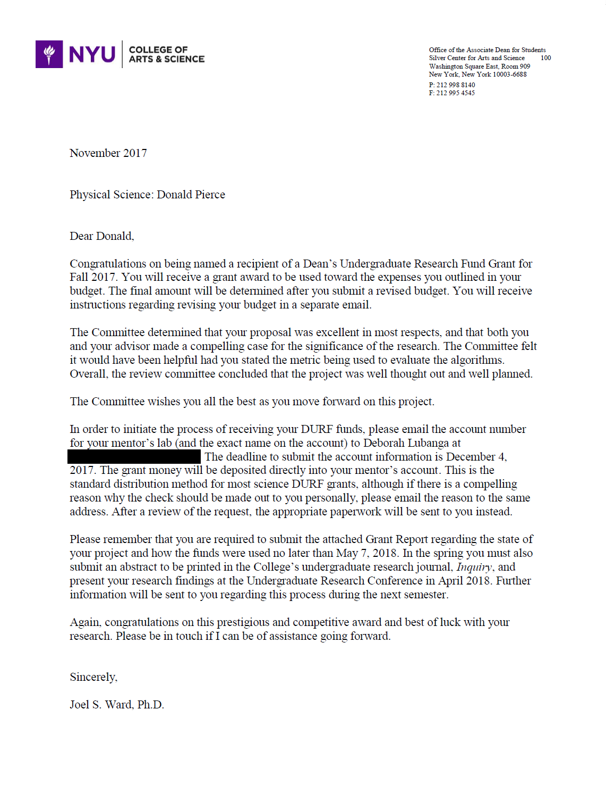

|
July 12, 2018 Syringe Pump-Driven Flow in an Industry-Facing Microfluidic Channel David Ruffner, Donald Pierce We derive an expression for the flow of a viscous microfluid through a specially-designed micrometer channel under the pressure of a mechanical pump. |
May 4, 2018 A Study of Efficiency of Combined Missing Transverse Momentum Algorithms at the LHC Donald Pierce, Joseph Corrado I present to a committee of scientists at the N.Y.U. Undergraduate Research Conference after receiving an a funding award. | ||
| 2018 | |||
|  | November 21, 2017 Named recipient of a Fall 2017 DURF Grant Donald Jordan Pierce "Congratulations on this prestigious and competative award and best of luck with your research." |
November 15, 2017 Study of 2016 MET Correlations Part 3 (12 Slides) Joseph Corrado, Donald Pierce We show that the efficiency of proposed combined HLT algorithms is better than their individual efficiencies. |
|
| October 4, 2017 Study of 2016 MET Correlations Part 2 (19 Slides) Joseph Corrado, Donald Pierce We present results which show that the framework for determining algorithm correlation is promising. We also test the efficiency of new HLT algorithms constructed using this framework. |
August 22, 2017 Remarks on Birkhoff's Theorem Donald Jordan Pierce I provide an explanation of Birkhoff's thoerem which exlains why 'mass' in vacuum solutions to Einstein's equations must be static and stationary. |
||
| August 9, 2017 Comparison of METx, METy Gaussian Fits and MET Rayleigh Fits (11 Slides) Donald Jordan Pierce I discuss the theoretically-predicted consistency between METx,y distributions and the MET distribution. |
July 11, 2017 Study of 2016 MET Correlations (55 Slides) Joseph Corrado, Donald Pierce We provide a study of the 2016 data, and propose a framework for determing the correlation between HLT algorithms. |
||
| 2016 | |||
| August 15, 2016 Comparing MET Trigger Algorithms Accross 2015/2016 Zero-Bias Data (17 Slides) Donald Pierce, David Schwerdt We discuss comparisons between different HLT triggers which calculate missing transverse momentum of particle collisions at the ATLAS experiment. |
|||
{kind=link}